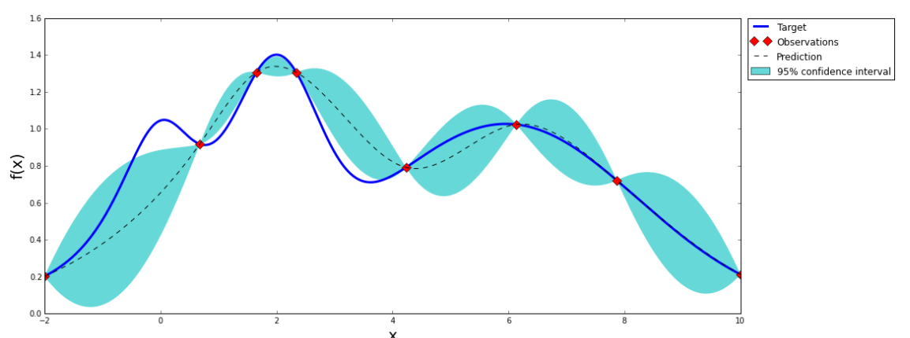
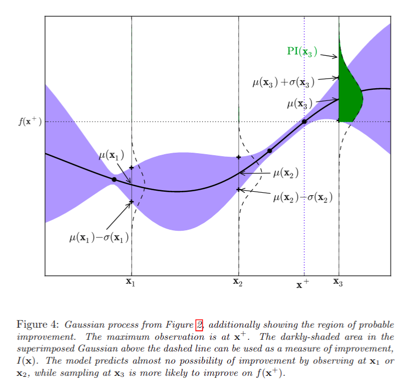
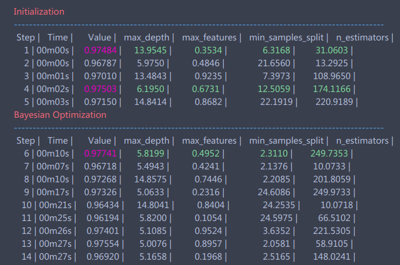

[MIGRATE]贝叶斯调参
Table of Contents
1 简介
贝叶斯优化 用于机器学习调参由J. Snoek(2012)提出，主要思想是，给定优化的目标函数(广义的函数，只需指定输入和输出即可，无需知道内部结构以及数学性质)，通过不断地添加样本点来更新目标函数的后验分布(高斯过程,直到后验分布基本贴合于真实分布。简单的说，就是 **考虑了上一次参数的信息**，从而更好的调整当前的参数。
他与常规的网格搜索或者随机搜索的区别是：
- 贝叶斯调参采用高斯过程， 考虑之前的参数信息 ，不断地更新先验；网格搜索未考虑之前的参数信息
- 贝叶斯调参 迭代次数少，速度快 ；网格搜索速度慢,参数多时易导致维度爆炸
- 贝叶斯调参针对非凸问题依然 稳健 ；网格搜索针对非凸问题易得到局部优最
2 理论
介绍贝叶斯优化调参，必须要从两个部分讲起：
- 高斯过程，用以拟合优化目标函数
- 贝叶斯优化，包括了“开采”和“勘探”，用以花最少的代价找到最优值
2.1 高斯过程
高斯过程可以用于非线性回归、非线性分类、参数寻优等等。以往的建模需要对 \(p(y|X)\) 建模，当用于预测时，则是
\begin{equation} p(y_{N+1} | X_{N+1}) \end{equation}而高斯过程则， 还考虑了 \(y_N\) 和 \(y_{N+1}\) 之间的关系 ，即：
\begin{equation} p(y_{N+1} | X_{N+1}, y_{N}) \end{equation}高斯过程通过假设 \(Y\) 值服从联合正态分布，来考虑 \(y_N\) 和 \(y_{N+1}\) 之间的关系，因此需要给定参数包括：均值向量和协方差矩阵，即：
\begin{equation} \begin{bmatrix} y_1 \\ y_2 \\ ... \\ y_n \\ \end{bmatrix} \sim N( \mathbf{0}, \begin{bmatrix} k(x_1, x_1) , k(x_1, x_2), ..., k(x_1, x_n) \\ k(x_2, x_1) , k(x_2, x_2), ..., k(x_2, x_n) \\ ... \\ k(x_n, x_1) , k(x_n, x_2), ..., k(x_n, x_n) \end{bmatrix} ) \end{equation}其中协方差矩阵又叫做 核矩阵, 记为 \(\mathbf{K}\) ，仅和特征 \(x\) 有关，和 \(y\) 无关。
高斯过程的思想是： 假设 \(Y\) 服从高维正态分布（先验），而根据训练集可以得到最优的核矩阵 ，从而得到后验以估计测试集 \(Y*\)
我们有后验：
\begin{equation} p(y_*| \mathbf{y} \sim N(K_* K^{-1} \mathbf{y}, ~ K_{**} - K_* K^{-1} K_*^T) \end{equation}其中，$K_*$为训练集的核向量，有如下关系：
\begin{equation} \begin{bmatrix} \mathbf{y} \\ y_* \end{bmatrix} \sim N(\mathbf{0}, \begin{bmatrix} K, K_*^T \\ K_*, K_{**} \\ \end{bmatrix}) \end{equation}可以发现，在后验公式中，只有均值和训练集 \(Y\) 有关，方差则仅仅和核矩阵，也就是训练集和测试集的 \(X\) 有关，与训练集 \(Y\) 无关
2.1.1 高斯过程的估计（训练）方法
假设使用平方指数核(Squared Exponential Kernel)，那么有：
\begin{equation} k(x_1, x_2) = \sigma^2_f exp(\frac{-(x_1 - x_2)^2}{2 l^2}) \end{equation}那么所需要的确定的超参数 \(\theta = [\sigma^2_f, l]\) ，由于 \(Y\) 服从多维正态分布，因此似然函数为：
\begin{equation} L = log p(y| x, \theta) = - \frac{1}{2} log|\mathbf{K}| - \frac{1}{2} (y - \mu)^T \mathbf{K}^{-1} (y - \mu) - n*log(2\pi)/2 \end{equation}由于 \(K\) 是由 \(\theta\) 决定的，所以通过梯度下降即可求出超参数 $θ$，而根据核矩阵的计算方式也可以进行预测。

上图是一张高斯分布拟合函数的示意图，可以看到，它只需要九个点，就可以大致拟合出整个函数形状（图片来自：https://github.com/fmfn/BayesianOptimization）
2.2 贝叶斯优化理论
贝叶斯优化是一种逼近思想，当计算非常复杂、迭代次数较高时能起到很好的效果，多用于超参数确定
2.2.1 基本思想
是基于数据使用贝叶斯定理估计目标函数的后验分布，然后再根据分布选择下一个采样的超参数组合。它充分利用了前一个采样点的信息，其优化的工作方式是通过对目标函数形状的学习，并找到使结果向全局最大提升的参数
高斯过程 用于在贝叶斯优化中对目标函数建模，得到其后验分布
通过高斯过程建模之后，我们尝试抽样进行样本计算，而贝叶斯优化很容易在局部最优解上不断采样，这就涉及到了开发和探索之间的权衡。
- 开发 (exploitation)
- 根据后验分布，在最可能出现全局最优解的区域进行采样, 开发高意味着均值高
- 探索 (exploration)
- 在还未取样的区域获取采样点， 探索高意味着方差高
而如何高效的采样，即开发和探索，我们需要用到 Acquisition Function, 它是用来寻找下一个 x 的函数。
2.2.2 Acquistion Function
一般形式的Acquisition Funtion是关于x的函数，映射到实数空间R，表示改点的目标函数值能够比当前最优值大多少的概率，目前主要有以下几种主流的Acquisition Function
2.2.2.1 POI(probability of improvement)
其中， \(f(X)\) 为X的目标函数值， \(f(X^+)\) 为 到目前为止 最优的X的目标函数值， \(\mu(x), \sigma(x)\) 分别是高斯过程所得到的目标函数的均值和方差，即 \(f(X)\) 的后验分布。 \(\xi\) 为trade-off系数,如果没有该系数，POI函数会倾向于取在 \(X^+\) 周围的点，即倾向于exploit而不是explore，因此加入该项进行权衡。
而我们要做的，就是尝试新的X，使得 \(POI(X)\) 最大，则采取该\(X\) （因为$f(X)$的计算代价非常大），通常我们使用 蒙特卡洛模拟 的方法进行。
详细情况见下图（图片来自 Ref[5])

2.2.2.2 Expected Improvement
POI是一个概率函数，因此只考虑了f(x) 比 \(f(x^+)\) 大的概率，而EI则是一个期望函数，因此考虑了 f(x) 比 \(f(x^+)\) 大多少。我们通过下式获取x
\begin{equation} x = argmax_x \ \ E(\max\{0, f_{t+1}(x) - f(X^+)\}| D_t) \end{equation}其中 \(D_t\) 为前t个样本，在正态分布的假定下，最终得到:
\begin{equation} EI(x) = \begin{cases} (\mu(x) - f(x^+)) \Phi(Z) + \sigma(x) \phi(Z), if \ \sigma(x) > 0 \\ 0, if \ \sigma(x) = 0 \end{cases} \end{equation}其中 \(Z= \frac{\mu(x) - f(x^+)}{\sigma(x)}\)
2.2.2.3 Confidence bound criteria
2.3 缺点和不足
- 高斯过程核矩阵不好选
3 例子
目前可以做贝叶斯优化的包非常多,光是python就有:
- [BayesianOptimization](https://github.com/fmfn/BayesianOptimization)
- [bayesopt](https://github.com/rmcantin/bayesopt)
- [skopt](https://github.com/scikit-optimize/scikit-optimize/tree/master/skop)
- …
本文使用BayesianOptimization为例，利用sklearn的随机森林模型进行分类
3.1 安装
pip install bayesian-optimization
3.2 前期准备
from sklearn.datasets import make_classification from sklearn.ensemble import RandomForestClassifier from sklearn.cross_validation import cross_val_score from bayes_opt import BayesianOptimization # 产生随机分类数据集，10个特征， 2个类别 x, y = make_classification(n_samples=1000,n_features=10,n_classes=2)
我们先看看不调参的结果：
rf = RandomForestClassifier() print(np.mean(cross_val_score(rf, x, y, cv=20, scoring='roc_auc'))) >>> 0.965162
可以看到，不调参的话模型20此交叉验证AUC均值是0.965162，算是一个不错的模型，那么如果用bayes调参结果会怎么样呢
3.3 bayes调参初探
我们先定义一个目标函数，里面放入我们希望优化的函数。比如此时，函数输入为随机森林的所有参数，输出为模型交叉验证5次的AUC均值，作为我们的目标函数。因为`bayes_opt`库只支持最大值，所以最后的输出如果是越小越好，那么需要在前面加上负号，以转为最大值。由于bayes优化只能优化连续超参数，因此要加上`int()`转为离散超参数。
def rf_cv(n_estimators, min_samples_split, max_features, max_depth): val = cross_val_score( RandomForestClassifier(n_estimators=int(n_estimators), min_samples_split=int(min_samples_split), max_features=min(max_features, 0.999), # float max_depth=int(max_depth), random_state=2 ), x, y, scoring='roc_auc', cv=5 ).mean() return val
然后我们就可以实例化一个bayes优化对象了：
rf_bo = BayesianOptimization( rf_cv, {'n_estimators': (10, 250), 'min_samples_split': (2, 25), 'max_features': (0.1, 0.999), 'max_depth': (5, 15)} )
里面的第一个参数是我们的优化目标函数，第二个参数是我们所需要输入的超参数名称，以及其范围。超参数名称必须和目标函数的输入名称一一对应。
完成上面两步之后，我们就可以运行bayes优化了！
rf_bo.maximize()
完成的时候会不断地输出结果，如下图所示：

等到程序结束，我们可以查看当前最优的参数和结果：
rf_bo.res['max'] >>> {'max_params': {'max_depth': 5.819908283575526, 'max_features': 0.4951745603509127, 'min_samples_split': 2.3110014720414958, 'n_estimators': 249.73529231990733}, 'max_val': 0.9774079407940794}
3.4 bayes调参进阶
上面bayes算法得到的参数并不一定最优，当然我们会遇到一种情况，就是我们已经知道有一组或是几组参数是非常好的了，我们想知道其附近有没有更好的。这个操作相当于上文bayes优化中的Explore操作，而bayes_opt库给了我们实现此方法的函数：
rf_bo.explore(
{'n_estimators': [10, 100, 200],
'min_samples_split': [2, 10, 20],
'max_features': [0.1, 0.5, 0.9],
'max_depth': [5, 10, 15]
}
)
这里我们添加了三组较优的超参数，让其在该参数基础上进行explore，可能会得到更好的结果。
同时，我们还可以修改高斯过程的参数，高斯过程主要参数是核函数(`kernel`)，还有其他参数可以参考[sklearn.gaussianprocess](http://scikit-learn.org/stable/modules/generated/sklearn.gaussian_process.GaussianProcessRegressor.html)
gp_param={'kernel':None} rf_bo.maximize(**gp_param)
最终我们的到参数如下：
{'max_params': {'max_depth': 5.819908283575526,
'max_features': 0.4951745603509127,
'min_samples_split': 2.3110014720414958,
'n_estimators': 249.73529231990733},
'max_val': 0.9774079407940794}
运行交叉验证测试一下：
rf = RandomForestClassifier(max_depth=6, max_features=0.39517, min_samples_split=2, n_estimators=250) np.mean(cross_val_score(rf, x, y, cv=20, scoring='roc_auc')) >>> 0.9754953
得到最终结果是0.9755，比之前的0.9652提高了约0.01，做过kaggle的朋友都懂，这在后期已经是非常大的提高了！到后面想提高0.001都极其困难，因此bayes优化真的非常强大！
结束！